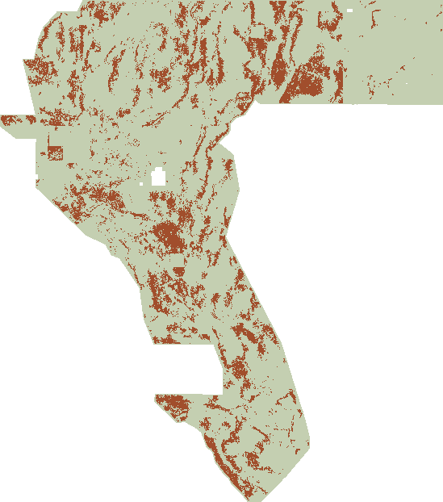

121k → 60k
Same underlying detections
We reproduced every H25 pixel. It adds no point; each parent prediction is within 141.42 m of a kept point. This does not certify hidden-truth coverage.
Pixel-level forensics ↗H27-SRCOH failed; no TIFF. Below: the earlier H27-DILCOND OOF, still blocked.
gems26-dilcond-oof-v1-20261003-47629f496133-nan.tif

H27-SRCOH scored 0.072414 sparse / 0.126771 dense, below the matched raw head (0.077166 / 0.136243), fixed XEDGE OOF and H25. All 15 preregistered rules failed. This latest screen exported no TIFF; the earlier DILCOND download below remains a separate blocked OOF research artifact.
| Arm | Dense pooled DTI | Mean pooled sparse DTI | Decision / scope |
|---|---|---|---|
| Historical H25-1 (as emitted) | 0.171825 | 0.096849 | Historical; catalogue-mask leakage |
| Fixed H26-XEDGE OOF | 0.133141 | 0.075839 | Earlier fixed OOF reference |
| Matched raw-feature head | 0.136243 | 0.077166 | Matched fresh OOF control |
| H27-SRCOH-v1 head | 0.126771 | 0.072414 | BLOCKED · -0.004752 vs raw; all 15 gate rules false |
Confirmation group offsets 150–179 reuses the known catalogue and four revealed quadrants; it is neither independent hidden-fault truth nor a contest score. H27-SRCOH emitted no TIFF and is not eligible for a weekly slot.
This earlier H27-DILCOND screen gained +0.003198 sparse DTI over raw, below its frozen +0.005 gate, and lost to H25 in all four confirmation quadrants. Its downloadable OOF TIFF passes local format checks only; do not submit it.
| Arm | Dense pooled DTI | Sparse pooled DTI | Decision / scope |
|---|---|---|---|
| Historical H25-1 (as emitted) | 0.171825 | 0.096432 | Historical; catalogue-mask leakage |
| Matched raw-feature head | 0.131911 | 0.073836 | Matched fresh OOF control |
| H27-DILCOND-v1 + raw head | 0.137279 | 0.077035 | BLOCKED · +0.003198 vs raw, below +0.005 gate |
| DILCOND coincidence-only ablation | 0.050201 | 0.033463 | Ablation; no submission |
Confirmation uses 30 new seed-offset draws over the same known catalogue and four revealed quadrants. New draw seeds do not create independent truth. DILCOND beat the raw head by +0.0032 pooled sparse (4/4 quadrant wins) but loses all four confirmation quadrants to H25 (−0.019398 pooled sparse).
XEDGE gained only +0.001132 sparse DTI over the matched raw control, below the frozen +0.005 requirement, and lost to H25 in all four confirmation quadrants. It remains research-only.
| Arm | Dense pooled DTI | Sparse pooled DTI | Decision / scope |
|---|---|---|---|
| Historical H25-1 (as emitted) | 0.171825 | 0.096432 | Historical; catalogue-mask leakage |
| Matched raw-feature head | 0.131911 | 0.073836 | Matched fresh OOF control |
| H26-XEDGE-v1 + raw head | 0.133141 | 0.074969 | BLOCKED · +0.001132 vs raw, below +0.005 gate |
| XEDGE edge-only ablation | 0.078320 | 0.044497 | Ablation; no submission |
Confirmation uses 30 new seed-offset draws over the same known catalogue and four revealed quadrants. New draw seeds do not create independent truth. Dense XEDGE is 0.038684 below H25; XEDGE loses all four confirmation quadrants to H25.
The earlier frozen SSL candidate also failed against H25 and its matched raw head. It remains separate historical evidence, not the current file.
| Arm | Dense pooled DTI | Sparse pooled DTI | Decision / scope |
|---|---|---|---|
| Historical H25-1 D1.5 | 0.171825 | 0.096261 | Historical / catalogue leakage disclosed |
| Historical H19-5 parent | 0.166252 | 0.071466 | Historical / catalogue leakage disclosed |
| Matched raw-feature head | 0.131911 | 0.074744 | OOF research control |
| Frozen SSL head | 0.123590 | 0.070184 | OOF research control |
| H26-SSL + error (primary) | 0.122164 | 0.069039 | REJECT · no submission |
| Label-free error only | 0.079130 | 0.044787 | OOF research control |
Confirmation: 30 paired, 20%-component-thinned draws; averages of pooled DTI, not old fold means. These reuse known faults—not independent novel-fault truth or live contest scores. H25 is compared as emitted, not a leakage-free retrained control.
H25-1 is the exact 1.5-pixel thinning of H19-5. Its apparent gain is consistent with saving false-positive mass under the distance-weighted metric.
We reproduced every H25 pixel. It adds no point; each parent prediction is within 141.42 m of a kept point. This does not certify hidden-truth coverage.
Pixel-level forensics ↗In our paired dense proxy, thinning retains 87.2% weighted TP credit while halving weighted FP mass. Redundant neighbours add FP mass, not extra TP credit once the same maximum is already reached.
Metric derivation →Owner-reported 0.1922 → 0.2477. The leaderboard snapshot confirms a score row—not which file produced it. Scores across older protocols are not interchangeable.
All reported files →XEDGE and DILCOND produced small positive gains that missed the sparse gate; the later SRCOH screen fell below its raw control. A third feature is not approved. The next recorded hypothesis is the emission/thinning operator that converts a score field into points, which H25 itself shows can move the metric substantially without any new geology.
Primary-source facts, local measurements, owner reports and untested ideas each carry a different evidence label.
Official competition rules, USGS data, GDR resources and primary MAE/Prithvi literature. Ambiguous channel names and raw-DEM access are flagged.
Open source ledger →Hash-pinned data restoration; full-raster masked training; frozen final heads; exact DTI; fail-closed TIFF writing. This small prototype ran on CPU.
Commands & code ↗No tuning on the revealed confirmation folds. Next: test the emission operator (H28), resolve metadata, add random-encoder controls, and find independent truth.
Next-session priorities →